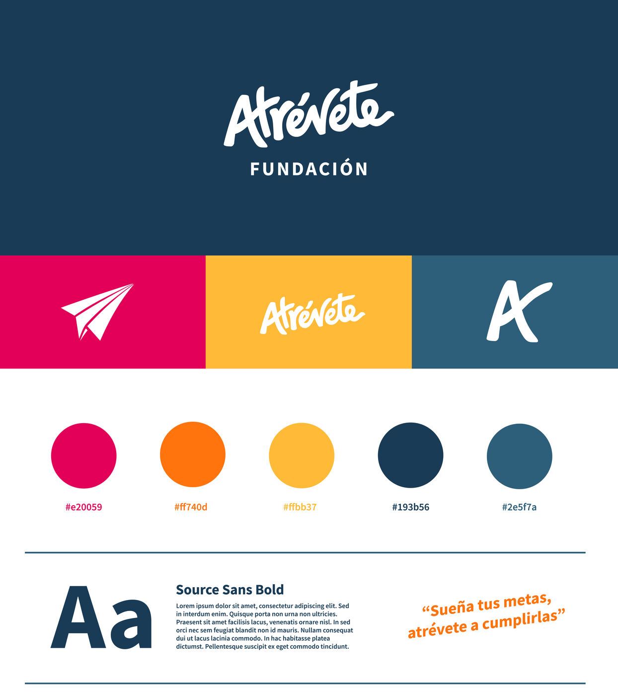
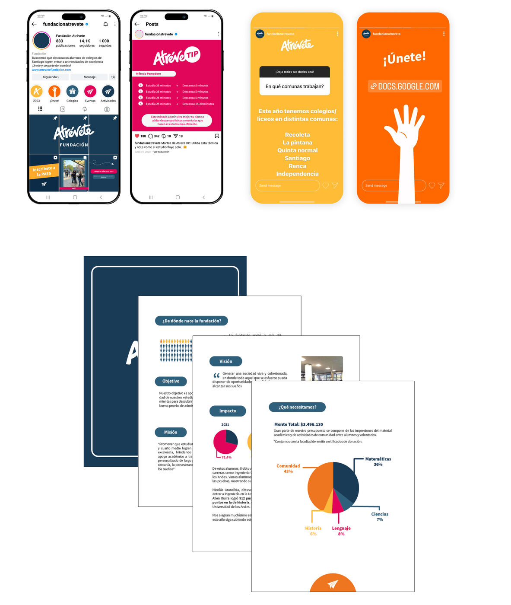
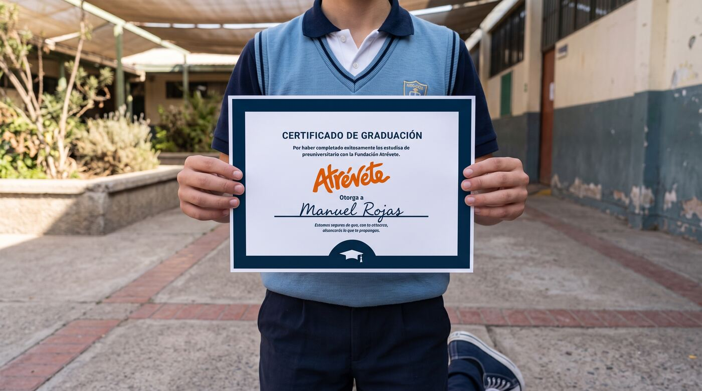
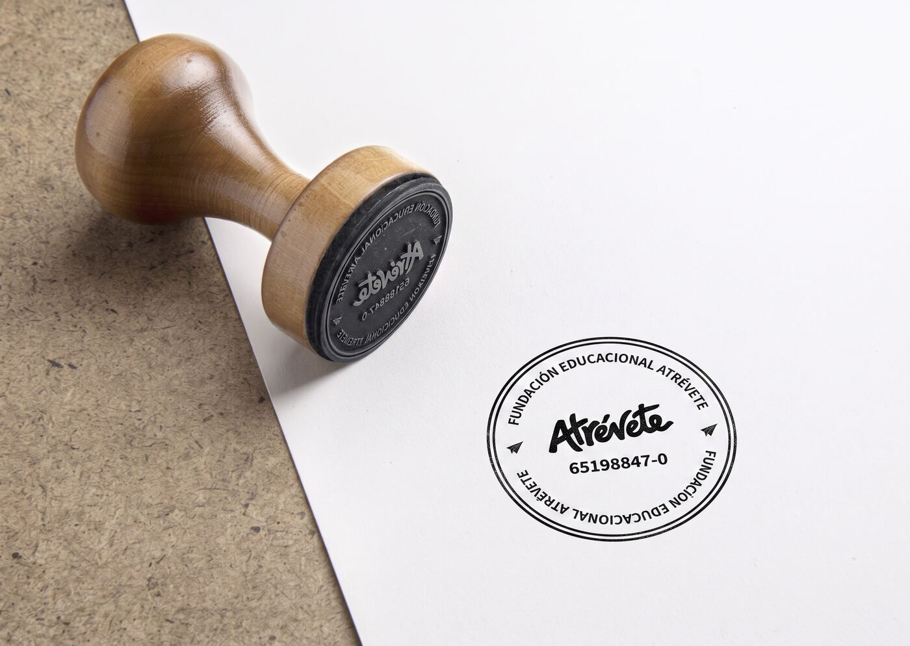

Institución orientada a impartir clases y preuniversitario en colegios vulnerables para fomentar el acceso a la educación superior. Se rediseñó su identidad de marca, equilibrando un carácter institucional y académico con un lenguaje visual atractivo y cercano para los estudiantes.